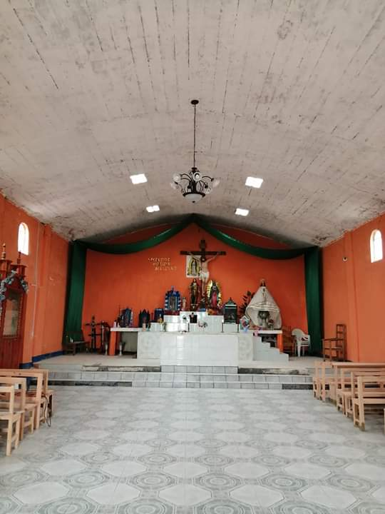
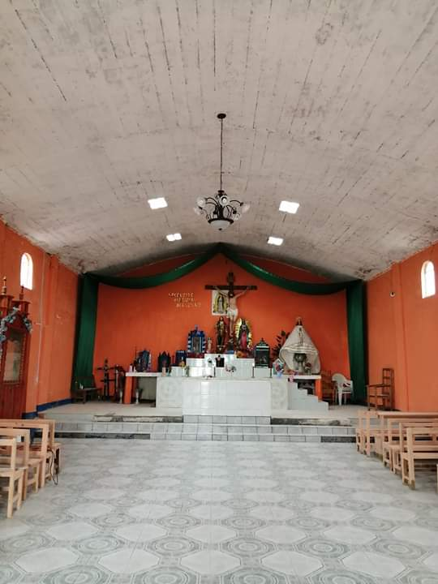
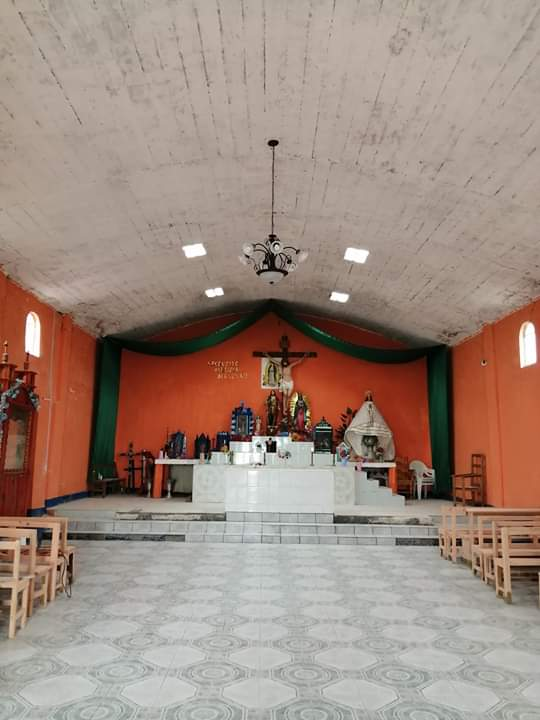
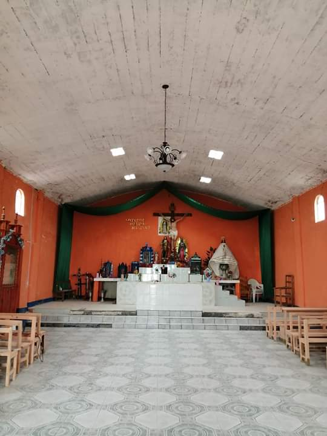
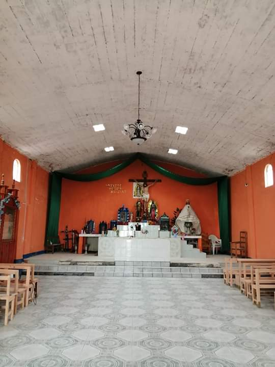

Religión En la Comunidad, los habitantes son de la relgion Catolica, en la cual se celebran varias fiestas y de la cual las mas memorables son:  Tercer Viernes de Cuaresma 15 de Mayo en Honor al señor San Isidro Labrador 8 de Diciembre en Honor a la Virgen de Juquila
 


